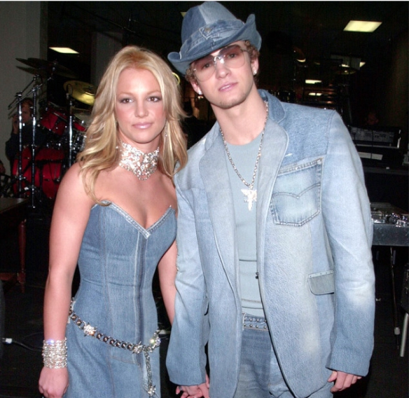
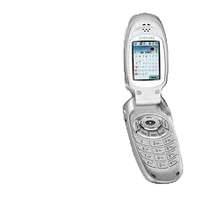

2000
Red Carpet Royalty
The 2000s red carpet moments gave us some of the most unforgettable fashion statements. Britney Spears and Justin Timberlake’s all-denim ensemble at the AMAs was peak 2000s. Halter tops, cowl-neck dresses, and bedazzled evening gowns turned heads at every event. Brands like Versace and Juicy Couture brought high fashion to the mainstream, with velour tracksuits becoming the uniform of the decade's “It girls,” like Paris Hilton and Nicole Richie.
Popstar Power
The 2000s wouldn’t have been the same without the influence of pop stars. Destiny’s Child set the stage with their coordinated outfits, blending girl-power sass with glamorous detail. Christina Aguilera and Gwen Stefani pushed boundaries with edgy looks, from studded leather to daring patterns. Boy bands like NSYNC and Backstreet Boys popularized baggy jeans and colorful layered shirts, proving that fashion was just as crucial for the guys.
The Rise of Techwear
The new millennium also brought a focus on tech-inspired clothing, mirroring the explosion of technology in daily life. Silver puffer jackets, shiny pleather pants, and chunky sneakers epitomized this trend. Sportswear brands like Puma and Adidas thrived, while luxury designers started incorporating more casual, athletic elements into their collections. Tracksuits, metallic accessories, and sporty aesthetics blurred the lines between casual and chic.
The Flip Phone Phenomenon
Fashion wasn’t just in your closet—it was in your pocket too. Flip phones like the Motorola Razr weren’t just communication devices; they were status symbols. With customizable cases, rhinestones, and a sleek, compact design, your phone was the ultimate accessory for showing off your personal style.
